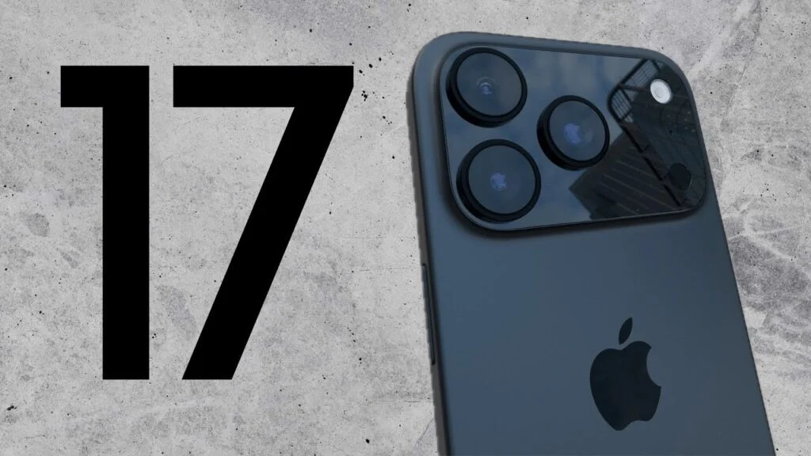

IPHONE 17 PRO
Design unibody. Alumínio forjado a quente. Capacidade excepcional.
Destaque
Apresentamos o iPhone 17 Pro e o iPhone 17 Pro Max. Projetados de dentro para fora, eles são os modelos de iPhone mais potentes já produzidos. O coração do novo design é a estrutura unibody em alumínio forjado a quente que maximiza o desempenho, a capacidade da bateria e a durabilidade.
Especificações Técnicas
| Característica | Detalhe |
|---|
| Armazenamento | IPhone 17 Pro 256,GB 512,GB 1TB |
| Bateria | Reprodução de vídeo Até 31 horas,Streaming de vídeo Até 28 horas |
| Câmera Traseira | Câmera Center Stage de 18 MP |
Apps incluidos

Classificação para aparelhos auditivos
- Compatível com aparelhos auditivos
Requisitos do sistema
- Conta Apple (necessária para alguns recursos) Acesso à internet
- A sincronização com um Mac ou PC requer:
- macOS Catalina 10.15 ou posterior usando o Finder
- macOS High Sierra 10.13 a macOS Mojave 10.14.6 usando o iTunes 12.8 ou posterior
Requisitos ambientais
- Temperatura operacional ambiente: 0 °C a 35 °C
- Temperatura não operacional: -20 °C a 45 °C
- Umidade relativa: 5% a 95%, sem condensação
- Altitude operacional: testado até 3.000m
Idiomas
- Inglês (Austrália, Reino Unido, EUA), chinês (simplificado, tradicional, tradicional de Hong Kong), francês (Canadá, França), alemão, italiano, japonês, coreano, espanhol (América Latina, Espanha), árabe, búlgaro, catalão, croata, tcheco, dinamarquês, holandês, finlandês, grego, hebraico, hindi, húngaro, indonésio, cazaque, malaio, norueguês, polonês, português (Brasil, Portugal), romeno, russo, eslovaco, sueco, tailandês, turco, ucraniano, vietnamita
Conteúdo da caixa
- iPhone com iOS 26
- Cabo para recarga com conector USB-C 1m
- Documentação